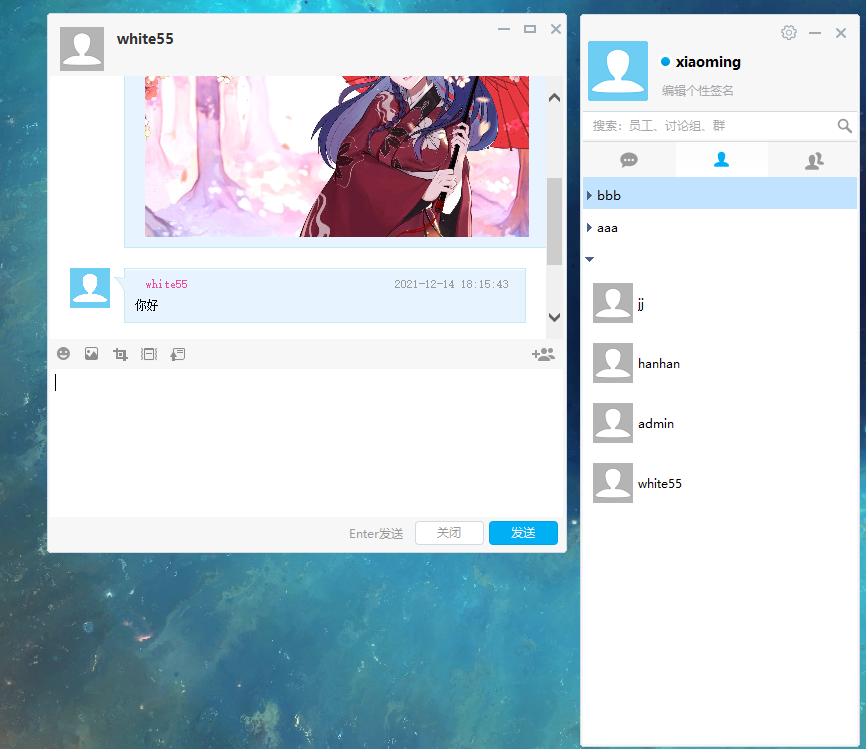

写在前面：teamtalk 是 github 上开源的一个企业级即时通讯软件，网上也能找到很多对它的介绍。小明在刚参加工作的时候，作为一名 windows C++ 开发人员，只会使用 MFC 拖动控件，然后写一些业务逻辑代码。后来通过对这个开源项目的学习，我受益匪浅。
编译部署
代码有好多，包括服务端、pc端、mac、安卓、ios、web。因为我就学了 pc 端和服务端的代码，所以就讲这两部分。
pc 端
pc 端编译很简单，用 vs2013 找到 teamtalk.sln 文件，编译即可。
就像这个样子：
现在还不能登录，因为还得部署服务端，并且在服务端上注册账号密码才行。
服务端
服务端部署就相对复杂很多了，特别是对于我这种对服务端开发没有开发经验的人。
网上找了两个博客：
一个是作者的：http://www.bluefoxah.org/teamtalk/new_tt_deploy.html
但是现在好像访问不了。我当时按照这个博客没有搭建成功。
第二个方法是网上的大神搞得一键部署工具：https://blog.csdn.net/waji2000/article/details/44925615
在虚拟机上安装最新的 CentOS 7 64 位，然后按着教程，最终部署成功。
如下图所示：

注册好用户后，客户端就可以登录啦。
登录后就是这个样子，我们现在就能通过源码去探索 teamtalk 的功能，和实现方法啦。本文到此结束，后续会对源码进行分析。